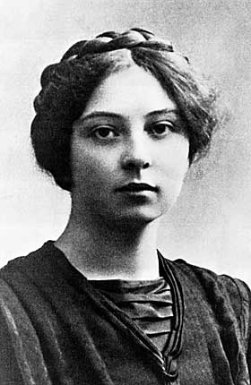
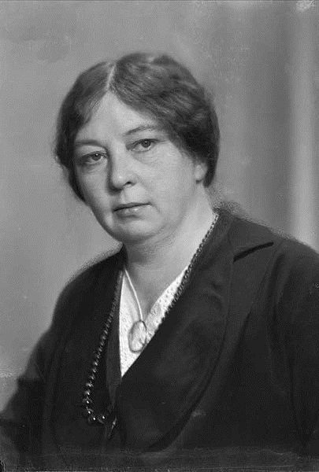

Năm 1928, Sigrid Undset, người Na Uy, được giải thưởng Nobel về toàn thể sự nghiệp văn chương lúc đó đã có bề thế của bà. số tiền thưởng, bà đem phân phát cho các cơ quan từ thiện. Tác phẩm cùng cá tính của bà đều khác bà Selma Lagerlöf.
Đời làm vợ, làm mẹ của bà thật đau khổ, đứt ruột, và chính vì bà rán vùng vẫy trong cảnh nô lệ tinh thần mà bà nghĩ tới sự tự giải thoát cho mình.
Trong các bản dịch ra tiếng Pháp, tác phẩm Jenny của bà được hoan nghênh nhất, cuốn đó kể đời một người đàn bà bị thành kiến áp chế, trói buộc mà trong cái xã hội tàn nhẫn với phụ nữ đó, người chồng vẫn sống tự do, không bị trục xuất; sau truyện đó tới truyện Christine Lavransdatter và truyện Olaf Audunssoen, vì Sigrid Undset vừa là một tiểu thuyết gia vừa là một sử gia không ai sánh kịp. Bà bảo:
“Tôi là một người đã sống hai ngàn năm ở cái xứ này”.

Sigrid Undset sanh ở Đan Mạch. Thân phụ là một nhà kháo cổ siêu quần, danh tiếng vượt ra ngoài bán đảo Scandinavie (1). Thân mẫu bà là người Đan Mạch.
Sigrid ra đời được ít năm thì gia đình dời lại ở Oslo, hồi đó còn gọi là Christiania. Chưa đầy mười một năm sau, thân phụ bà tính tình vui mà thông minh nhưng hoang phí, từ trần đương lúc tuổi còn trẻ; để lại cảnh nghèo khổ cho vợ và ba người con gái.
Ngay từ hồi mười sáu tuổi Sigrid Undset đã phải làm thư ký kiếm tiền giúp nhà. Hồi đó rất ít phụ nữ làm thư ký, và nhờ phải kiếm ăn như vậy bà được biết đời sống trong các văn phòng, nó mở cho bà những chân trời mới, nếu không thì bà làm sao hiểu được thân phận của phụ nữ lao động tinh thần. Chính bà cảm thấy không khí ngột ngạt của cuộc đời đơn điệu, bó buộc đó, và để thoát li khỏi cảnh đó bà bắt đầu viết vài truyện ngắn. Bà dùng những nhận xét riêng của bà về xã hội chung quanh, và những tục truyền Na Uy mà thân phụ đã chỉ cho bà, để xây dựng những truyện ấy. Bà thành công, được trợ cấp để đi du lịch khắp châu Âu. Rồi chẳng bao lâu bà bỏ hẳn nghề thư ký để phục vụ văn học. Bà tới La Mã, được biết một giới kỳ dị, khác hẳn cái giới quen thuộc của bà: một giới gồm các nghệ sĩ, văn sĩ đủ các quốc tịch. Tại đó bà gặp một họa sĩ Na Uy tên là Svarstad, có vợ và ba con. Ông này ly dị với vợ để cưới bà.
Từ năm 1912 tới năm 1919, bà sanh được hai cậu và một cô: cô này suy nhược về tinh thần, mất hồi hai mươi tuổi. Cảnh ngộ của bà cũng bi thảm như cảnh ngộ của Pearl Buck.
Hai ông bà lúc đó đương ở Oslo thì một người đồng hương của Sigrid, tên là Peter Rokseth muốn giới thiệu cho họa sĩ Na Uy biết phong trào phục hưng tinh thần mà ông ta mới nhận thấy ở Pháp. Ông ta trình một luận văn về Paul Claudel và sửa soạn viết một cuốn về Péguy, chưa kịp viết xong thì chết. Sigrid Undset lưu tâm tới phong trào đó và đăng một bài báo về Jacques Maritain, gây được một tiếng vang lớn.
Các tu sĩ Pháp thuộc giòng Saint Dominique đã lại Oslo từ sau thế chiến thứ nhất và Sigrid chịu ngay ảnh hưởng của họ, đặc biệt là linh mục Iiptz. Được biết khuynh hướng mới của Công giáo Pháp thiên về hoạt động xã hội, bà ham mê lắm. Ngọn lửa tinh thần mới phát lên của Pháp đó, vừa có tính cách bừng bừng vừa hợp với triết lý của Descartes, gây cho bà một ấn tượng mạnh. Bà bèn nghiên cứu sự thần bí của Công giáo Na Uy thời Trung cổ, viết được những bộ sử lớn lao miêu tả xã hội thời đó.
Tác phẩm nổi danh nhất của bà là truyện Christine Lavransdatter. Truyện đó gồm ba cuốn; có lẽ là tác phẩm mạnh mẽ nhất, xây dựng vững vàng nhất trong số các tiểu thuyết của các nữ sĩ từ xưa tới nay. Có lẽ không ai miêu tả được khéo hơn bà những tình cảm của một người thiếu phụ còn trẻ rồi lần lần nảy nở ra, sanh được bảy đứa con, đều là con trai; người nào đã bồng một đứa trẻ mới sanh, thấy nó lớn lên lần lần, thành nhân rồi xa mình, có khi chết trước mình nữa, mà đọc tác phẩm đó, tất phải xúc động mạnh. Và bên cạnh tình mẹ thương con sâu sắc đó, còn cái tình yêu chồng, nồng nàn, thủy chung, bất biến, bất chấp mọi trở ngại. Có thể đọc lại hoài tác phẩm đó mà lần nào cũng thấy thêm được một cái gì mới mẻ. Truyện đó, khung cảnh là buổi đầu thời Trung cổ, mà vẫn còn hợp thời như đương xảy ra ở trước mắt chúng ta; quá thực là tấm lòng con người xưa cũng như nay, chẳng có gì thay đổi cả.
Trong toàn thể sự nghiệp văn chương của Sigrid Undset, bộ Christine Lavransdatter giữ một địa vị đặc biệt không phải chỉ vì nó đã thành công mà còn vì những lẽ Lucien Maury nêu ra dưới đây:
“Tác phẩm Christine Lavransdatter xuất hiện trong đời Sigrid Undset vào một lúc bà đã từng trải nhiều rồi, chán nản nhưng can đảm cương quyết chấm dứt cái thời trước mà bà bỗng hiểu rõ: sau khi viết bao nhiêu truyện ngắn, truyện dài mà bà không dám rời bỏ cái thực tại chung quanh; sau khi tả bao nhiêu cuộc đời buồn thảm, bao nhiêu thiếu nữ bị tình nhân phụ bạc, bao nhiêu phụ nữ trong giới tiểu tư sản, hay đổ kỵ, hẹp hòi, tình cảm nghèo nàn, trong số đó bà rán kiếm một người bạn đồng tâm mà không ra; sau cả một thời gian kiên tâm tìm kiếm và gần như thất vọng, lần này bà vượt ra khỏi cái thực tại buồn rầu, tầm thường mà dám quan niệm một nữ tính hớn hở, rạng rỡ. Dù bà cố tình hay không thì nét mặt, những nét cương quyết, vẻ nhìn của bà như đè nặng lên, chi phối vạn vật và thế giới, tất cả những cái đó đều hiện lên rõ trong tinh thần rực rỡ, cao cả của nhân vật trong truyện bà thích nhất đó, nhân vật Christine Lavransdatter.
Truyện đó có thể coi là túi điều hoặc lời tuyên ngôn của bà (...). Và có lẽ vì bà vô tình cho nhân vật ấy có những nét giống mình hoặc giống với cái mơ ước của mình mà tác phẩm được các thanh niên Tây Âu và Bắc Âu hoan nghênh lâu như vậy và được giải thưởng Nobel, danh tiếng vang lừng trên văn đàn thời đại.
Nếu tác phẩm linh động nào cũng ngầm chứa một lời tự thú của tác giả thì ta có thể xác nhận mà không sợ lầm rằng bà Sigrid Undset đã bày tỏ nhãn sinh cùng nghệ thuật quan của mình trong bộ đó”.
Trong bài Tựa bộ Christine Lavransdatter, André Bellessort cũng ngỏ lời khen như sau:
“Tôi không thấy một lịch sử tiểu thuyết nào mà ít để lộ cái ý dạy bảo chúng ta bằng tác phẩm vĩ đại trong văn học Na Uy hiện đại đó. Không có một nhân vật nào được tạo ra để tượng trưng phong tục hay tinh thần của thời Trung cổ Na Uy. Người ta không cảm thấy tác giả cố ý tìm những tài liệu đặc biệt, tìm những màu sắc địa phương lòe loẹt. Tác giả làm sống lại thời cổ mà tác phẩm không có chút gì mùi mốc nào cả”.
Nhưng Sigrid Undset trong khi tự tìm hiểu mình, đã chịu nhận hết những hậu quả xảy ra. Do một phản ứng rất tự nhiên ở một người sâu sắc, nhiệt tâm, chấp nhất như bà, năm 1919, bà cải giáo, theo đạo Công giáo, làm cho dân chúng Na Uy chẳng những ngạc nhiên vô cùng mà còn thực bất bình nữa. Vì, ở Na Uy, đạo Tin Lành phái Luther được coi là quốc giáo. Hậu quả tác động tới đời công của bà, lại làm rối loạn cả đời tư của bà nữa. Người vợ trước của Svarstad còn sống, và Sigrid Undset muốn theo đạo Công giáo thì phải ly dị với chồng. Svarstad ở lại Oslo, còn bà dắt các con lại ở một căn nhà miền thôn dã Lillehammer; bà đặt tên cho căn nhà đó là Bjekeback, có nghĩa là “người di trú”.
Ngay từ 1935, Sigrid Undset đã tố cáo chế độ Quốc Xã của Hitler và viết một bài báo quan trọng đăng trên một tạp chí ở Lucerne chống Quốc Xã. Sau này bà không ngớt tấn công chế độ đó trong các tạp chí và nhật báo bà hợp tác, ở Scandinavie cũng như ở các nước khác.
Năm 1940, đầu thế chiến thứ nhì, quân đội Đức xâm chiếm Na Uy. Bà Sigrid Undset phải tản cư đi, ski (2) lên tới Laponie rồi qua Thụy Điển, năm đó bà đã sáu mươi tuổi!

Tới Stockholm bà hay tin con trai của bà chỉ huy một đội sử dụng liên thanh đã tử trận. Người con trai thứ của bà lại tìm bà ở Stockholm rồi cả hai đáp phi cơ qua Moscou. Họ ở Moscou không quá mười lăm ngày rồi do đường xe lửa xuyên Sibérie qua Nhật Bản, từ đây qua San Francisco, tới New York. Bạn bè đã giữ trước cho họ một căn nhà tại đó nhiều văn sĩ, hầu hết từ Âu châu tản cư qua ở chung với nhau.
Bà không chịu được cảnh ở chung, vì ồn ào quá nên ra ở riêng tại một phố tĩnh mịch. Bà cần sự tịch liêu, yên lặng.
Sau cuộc chạy loạn vòng quanh thế giới trong những hoàn cảnh nhiều khi bi đát, sôi lên sùng sục đó, bà phải tĩnh tâm và tĩnh dưỡng.
Bà khôi phục lại sức khỏe rất mau, viết cho nhiều tạp chí Huê Kỳ, diễn thuyết nhiều nơi, giới thiệu xứ Na Uy cho người ta yêu quê hương bà.
Bà làm việc với Thomas Mann, Jacques Maritain và Gaetana Salvermi.
Năm 1944, bà viết chung với nhiều nhà văn khác một cuốn nhan đề là Les dix commandements (Thập giới) do Hermann Rauschnig đề tựa. Trong bảng toát yếu, thấy ghi tên của Thomas Mann, Rebecca West, Franz Werfel, John Erskine, Bruno Frank, Jules Romains, André Maurois, Hendrik Wilherm van Loo và Louis Bromfield.
Cũng vào khoảng đó bà viết một cuốn lý thú cho trẻ em.
Hết chiến tranh, Na Uy được giải thoát. Sigrid Undset liền về nhà cũ ở Lillehammer. Bà đau lòng nhìn chiếc bàn viết cũ của bà bị quân Đức đập phá, chiếc bàn đó của thân phụ bà để lại và bà đã ngồi ở đó viết những tiểu thuyết nổi danh nhất của bà.
Nhưng sự thiệt hại riêng tư đó đáng kể gì đâu, so với sự tàn phá chung của quốc gia? Bà sửa sang lại căn nhà rồi lại cặm cụi làm việc.
Quốc vương Haakon mà bà rất phục thái độ can đảm trong suốt chiến tranh, tặng bà huy chương quý nhất của Na Uy: đệ nhất hạng bội tinh Saint Olaf.
Ít lâu sau bà bắt đầu viết cuốn Vie de Sainte Catherine de Sienne, chưa xong thì mất ngày mùng 10 tháng 6 năm 1949, thọ 67 tuổi. Cho tới lúc tắt nghỉ, bà vẫn giữ được nét mặt đẹp và quyến rũ lạ lùng, lưỡng quyền cao mà cặp mắt cương quyết, sắc sảo (3).
Chú thích:
[1] Tức Đan Mạch và Thụy Điển.
(2) Đồ để trượt tuyết.
(3) Ngoài hai tác phẩm đã giới thiệu trong bài này, bà còn lưu lại một cuốn tự truyện Bà Marthe Oulié, và các tiểu thuyết Tuổi sung sướng, Jenny, Người nghèo, Xuân, Sanh đẻ...